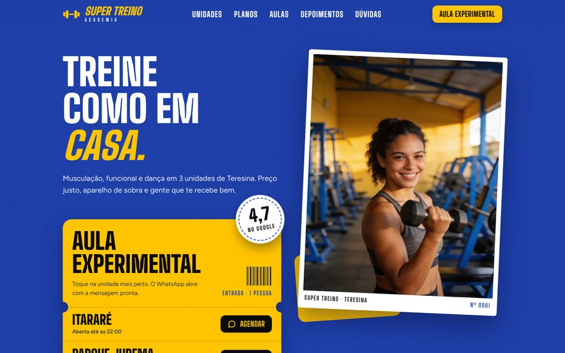
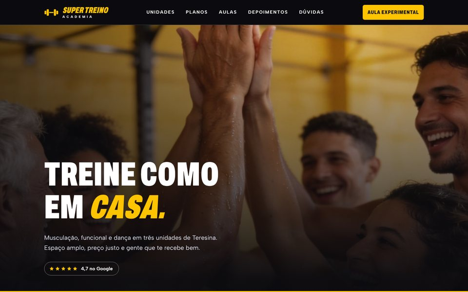
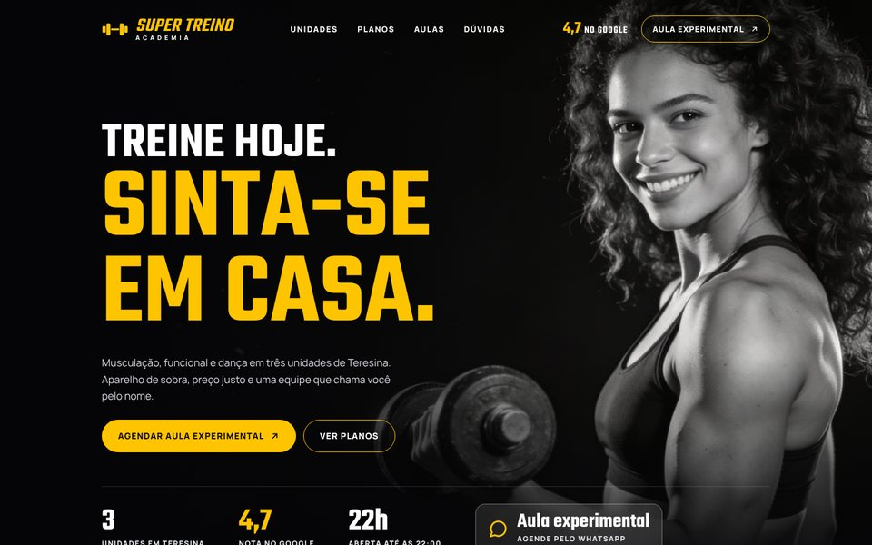
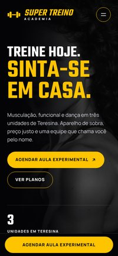

Opção A Ingresso de festa
Ingressos picotados, azul royal e amarelo. O mais próximo da marca no Instagram: festa, energia e clima de família.
Super Treino Academia
Cada opção é um site completo e navegável: home e uma página para cada unidade, com planos, horários, mapa e WhatsApp. Abra, role, toque nos botões e compare. Em qualquer página dá para trocar de layout pelo seletor no canto da tela.

Ingressos picotados, azul royal e amarelo. O mais próximo da marca no Instagram: festa, energia e clima de família.

Fotos em tela cheia e tipografia condensada em fundo escuro. Visual de academia premium, com tabela de planos para comparar.


Preto e branco que ganha cor ao passar o mouse, números grandes e muito amarelo. Direto e esportivo.